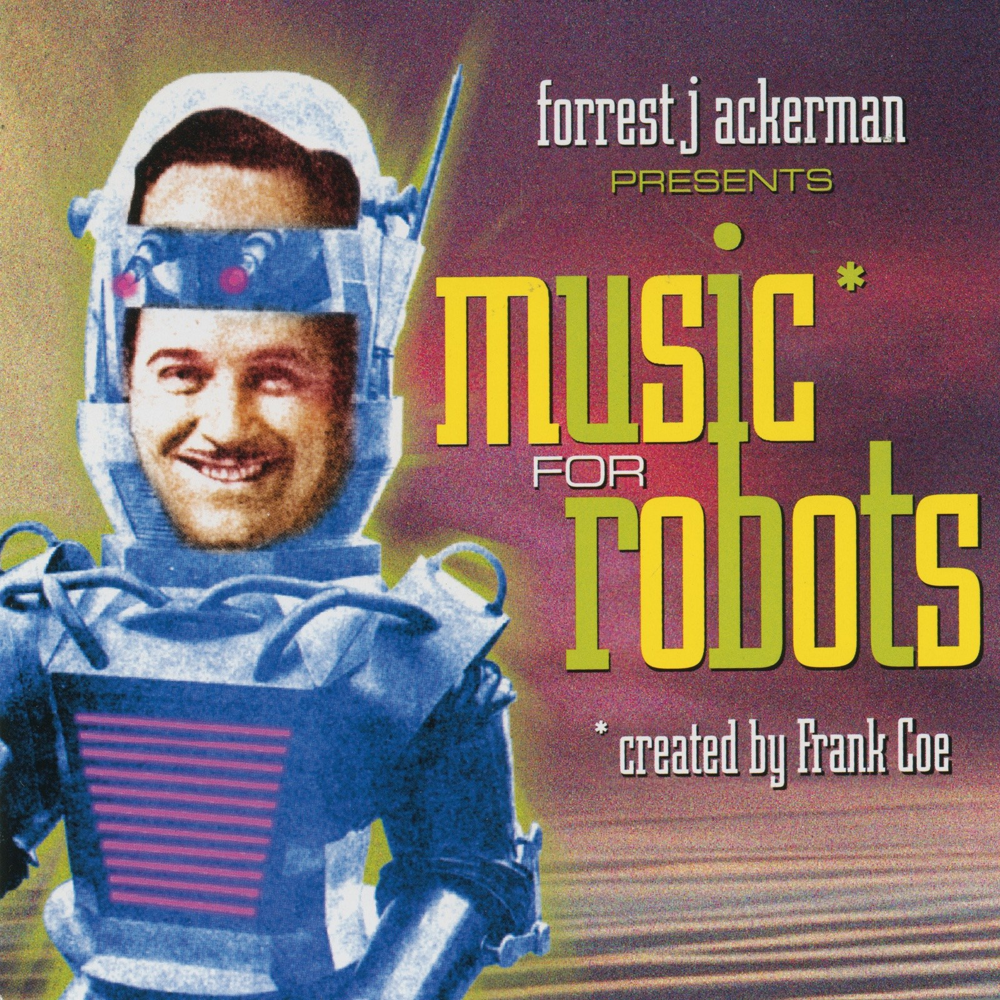
CRVI000016Frank Coe, Forrest J. Ackerman - Music For Robots
Designed by Frank Coe · Science Fiction Records · 1961
Designed by Frank Coe · Science Fiction Records · 1961

CRVI000113Kiyoshi Awazu - La Chinoise
Japanese poster for the first Japanese release of Godard's film · Athos · 1967
Japanese poster for the first Japanese release of Godard's film · Athos · 1967
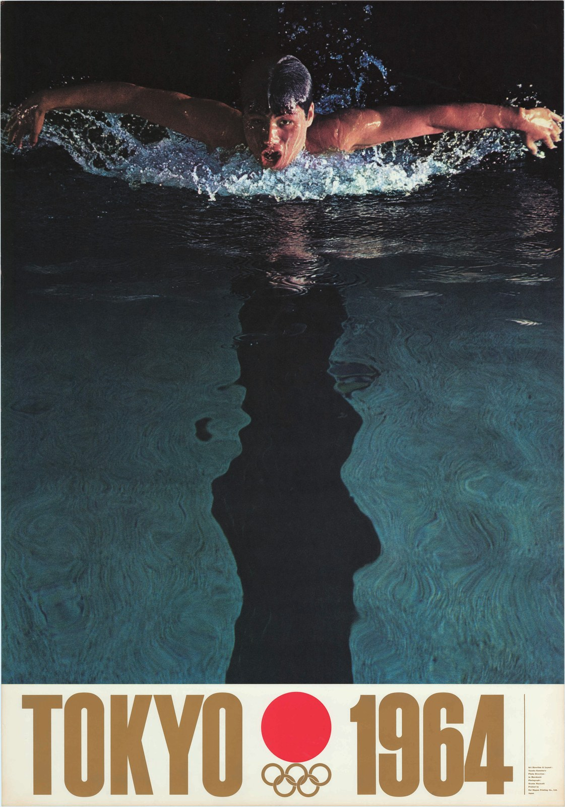
CRVI000114Yusaku Kamekura - Tokyo 1964 — Butterfly Swimmer
Official poster, Games of the XVIII Olympiad · photograph Osamu Hayasaki · photo direction Jo Murakoshi · 1964
Official poster, Games of the XVIII Olympiad · photograph Osamu Hayasaki · photo direction Jo Murakoshi · 1964

CRVI000115Yusaku Kamekura - Tokyo 1964 — Starting Line
Official poster, Games of the XVIII Olympiad · photograph Osamu Hayasaki · 1964
Official poster, Games of the XVIII Olympiad · photograph Osamu Hayasaki · 1964

CRVI000116Tadanori Yokoo - Made in Japan, Tadanori Yokoo, Having Reached a Climax at the Age of 29, I Was Dead
Self-portrait poster · 1965
Self-portrait poster · 1965
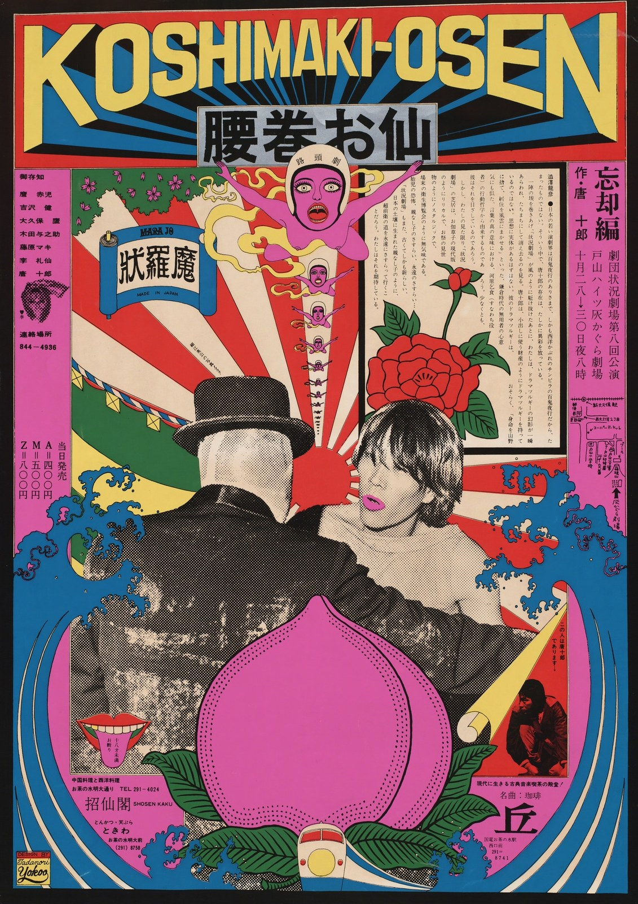
CRVI000119Tadanori Yokoo - Koshimaki-Osen
腰巻お仙 · theatre poster for Kara Juro's Jokyo Gekijo (Situation Theatre) · silkscreen · 1966
腰巻お仙 · theatre poster for Kara Juro's Jokyo Gekijo (Situation Theatre) · silkscreen · 1966

CRVI000121Tadanori Yokoo - Word & Image
The Museum of Modern Art, New York, January 24 – March 10 · 1968
The Museum of Modern Art, New York, January 24 – March 10 · 1968

CRVI000132Tadanori Yokoo - The 5th International Biennial Exhibition of Prints in Tokyo
The National Museum of Modern Art, Tokyo · 11.2–12.15 · 1966
The National Museum of Modern Art, Tokyo · 11.2–12.15 · 1966
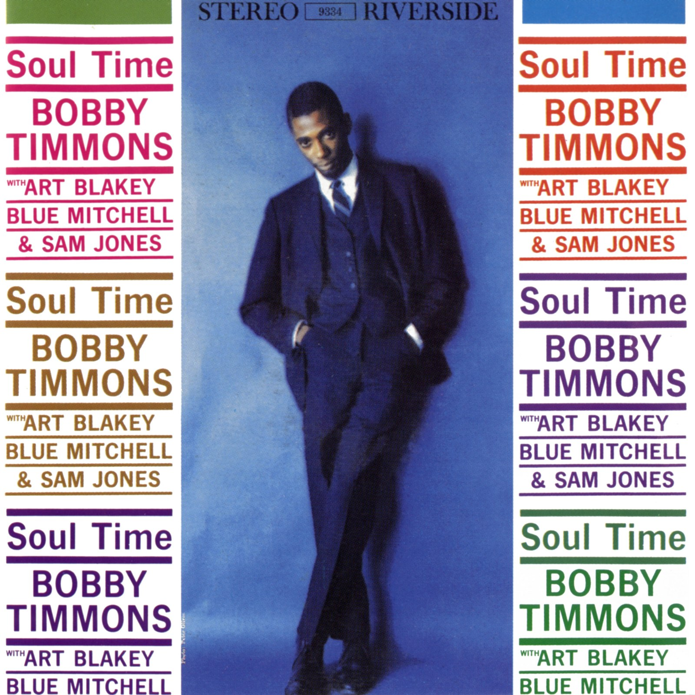
CRVI000146Bobby Timmons - Soul Time
Designed by Ken Deardoff · 1960
Designed by Ken Deardoff · 1960
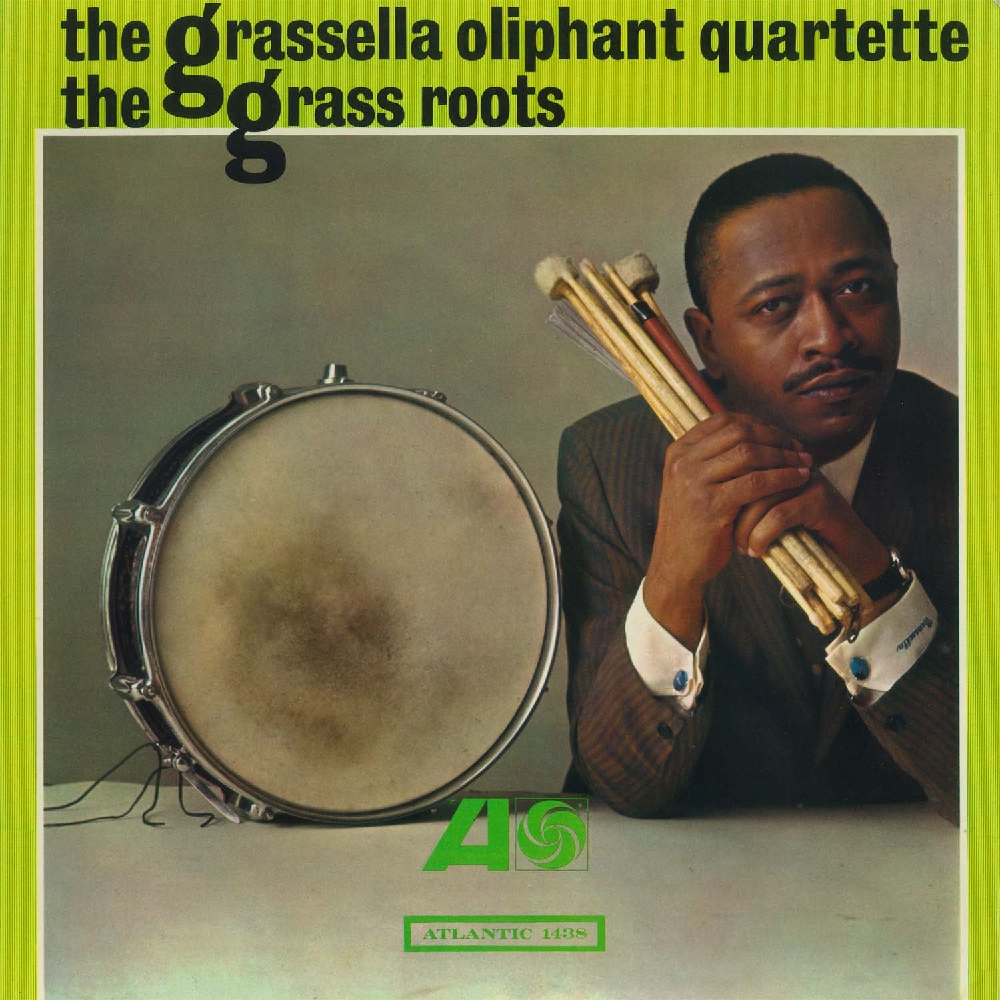
CRVI000147The Grassella Oliphant Quartette - The Grass Roots
Designed by Loring Eutemey · 1965
Designed by Loring Eutemey · 1965

CRVI000148Pharoah Sanders - Tauhid
Designed by Robert (Viceroy) Flynn · Impulse! AS-9138 · 1966
Designed by Robert (Viceroy) Flynn · Impulse! AS-9138 · 1966

CRVI000153Wynton Kelly - It's All Right!
Designed by Michael J. Malatak · 1964
Designed by Michael J. Malatak · 1964

CRVI000167Albert Ayler - New Grass
Designer unknown · 1969
Designer unknown · 1969
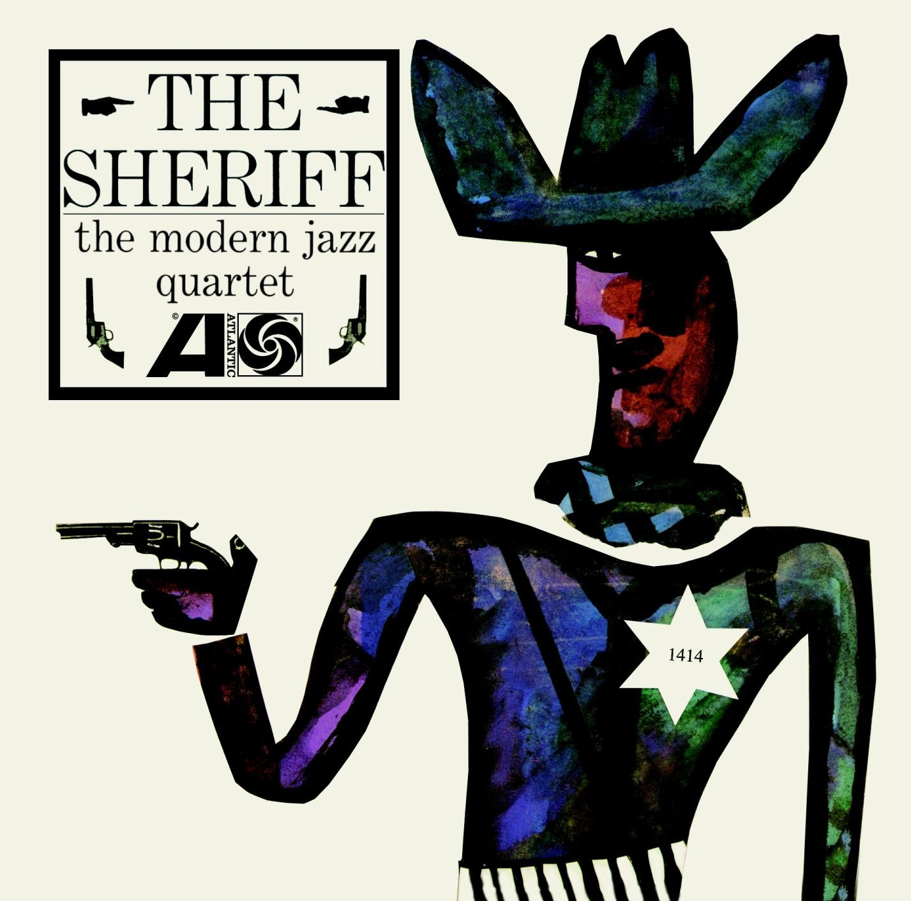
CRVI000174The Modern Jazz Quartet - The Sheriff
Designer unknown · Atlantic 1414 · 1964
Designer unknown · Atlantic 1414 · 1964
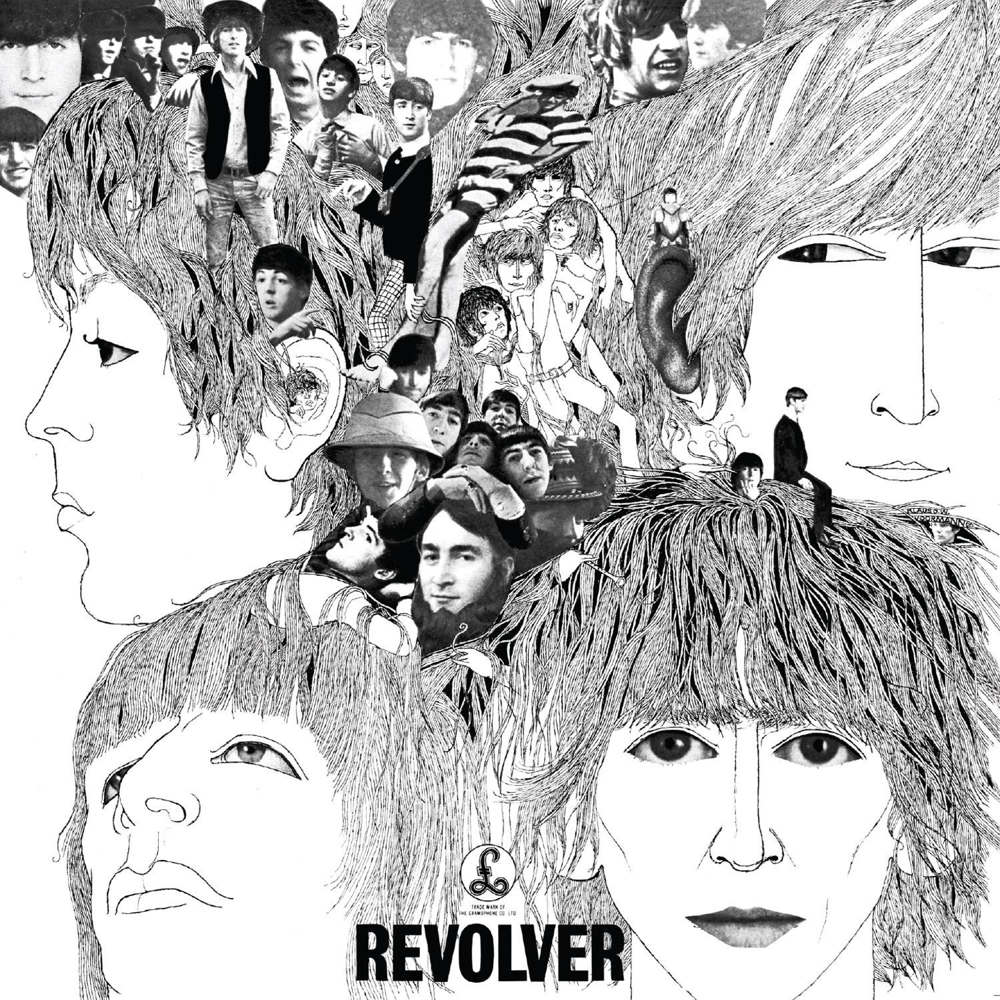
CRVI000176The Beatles - Revolver
Designed by Klaus Voormann · Parlophone PCS7009 · 1966
Designed by Klaus Voormann · Parlophone PCS7009 · 1966
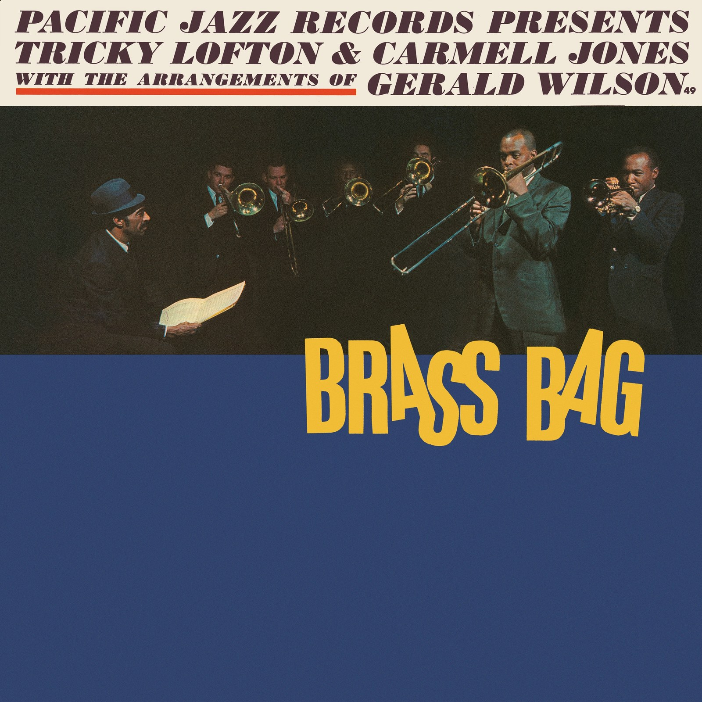
CRVI000180Tricky Lofton & Carmell Jones - Brass Bag
Designed by Woody Woodward · 1962
Designed by Woody Woodward · 1962
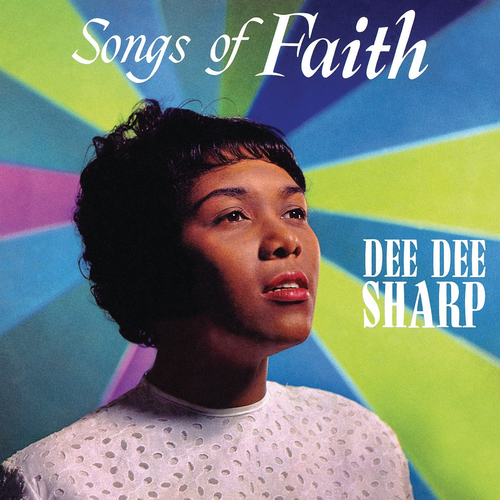
CRVI000183Dee Dee Sharp - Songs of Faith
Designer unknown · Cameo · 1962
Designer unknown · Cameo · 1962

CRVI000217Yayoi Kusama - Infinity Mirror Room — Phalli's Field (or Floor Show)
Kusama standing in the work · via David Zwirner · 1965
Kusama standing in the work · via David Zwirner · 1965
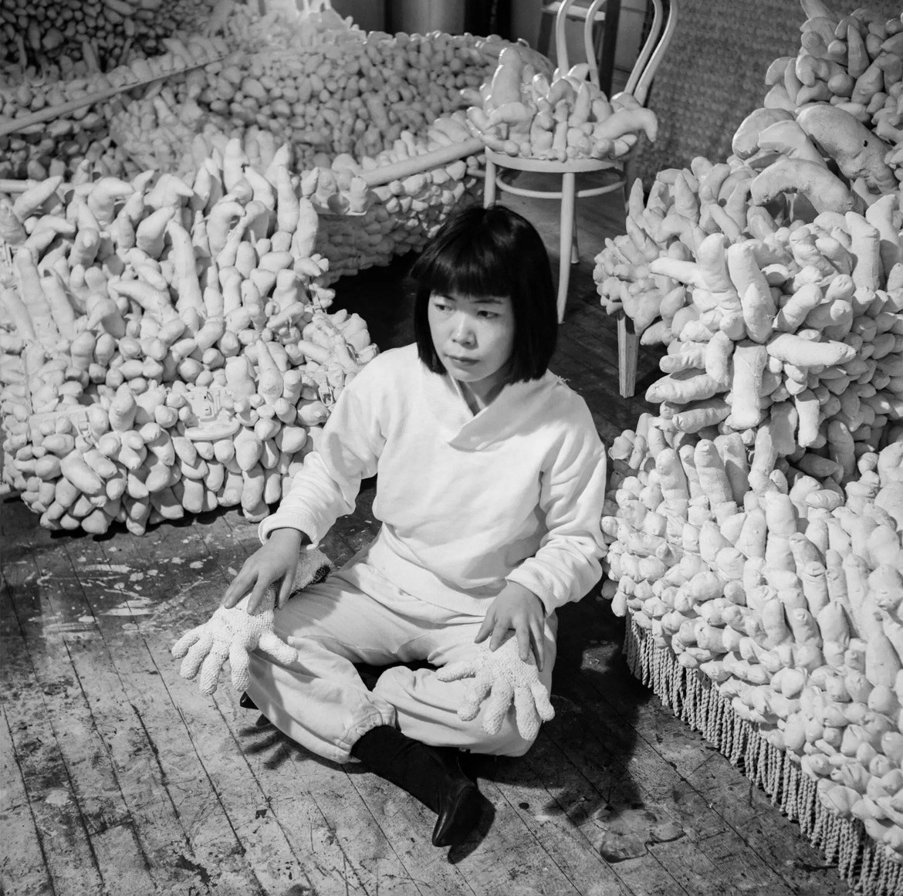
CRVI000222Yayoi Kusama - Kusama with her stuffed fabric works
Photograph by Evelyn Hofer · among the sewn phalluses of her room-filling installations · 1964
Photograph by Evelyn Hofer · among the sewn phalluses of her room-filling installations · 1964
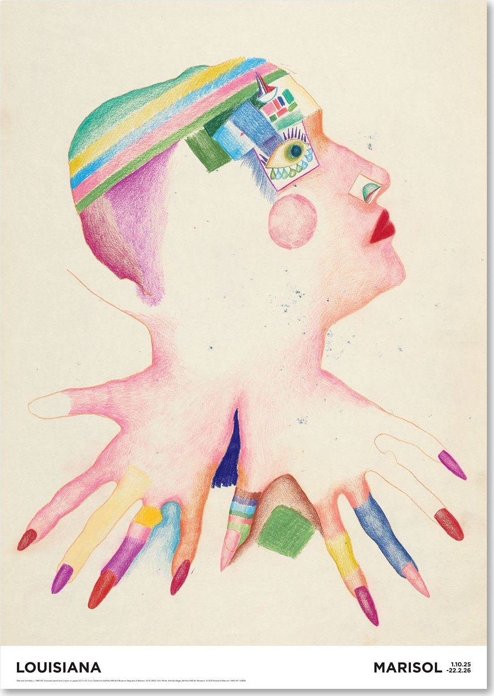
CRVI000247Marisol - Untitled
Exhibition Poster · 1960-65 · 1960-65
Exhibition Poster · 1960-65 · 1960-65